第1课时｜45分钟
女装设计 III · 第06周
第06周｜元素变形·分解板
变形不是装饰增加，而是有规则地改变元素。
让同一核心元素经过二维、三维和材料操作，形成多个可比较家族。
不变条件 → 变形操作 → 12个变体 → 3个家族 → 分解板
第06周形态实验系列同一系列 5套造型
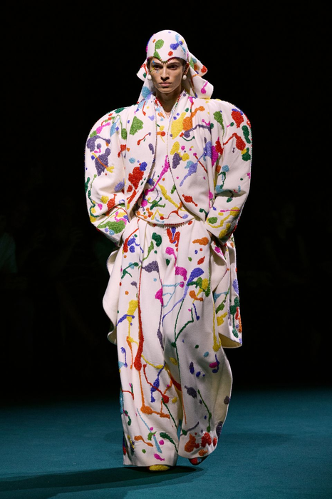
01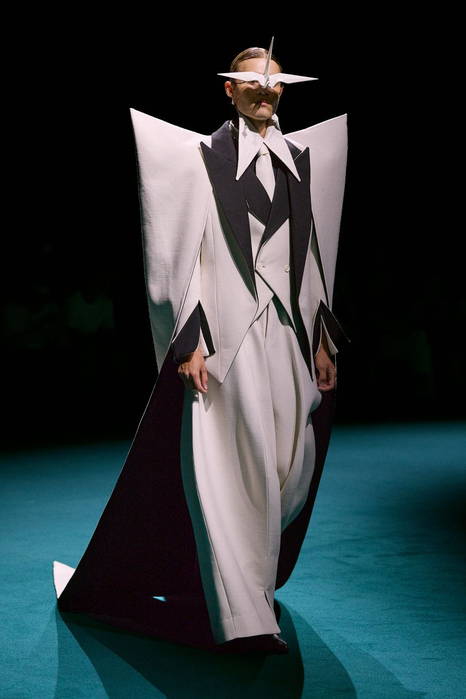
02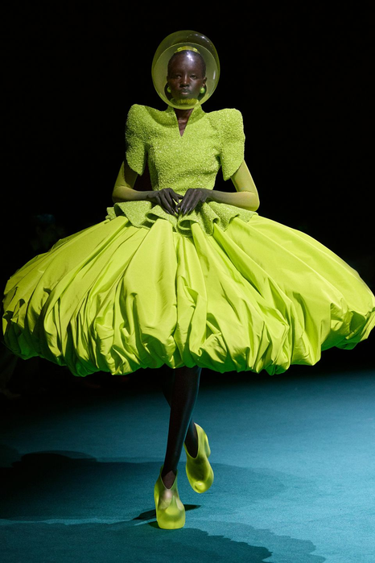
03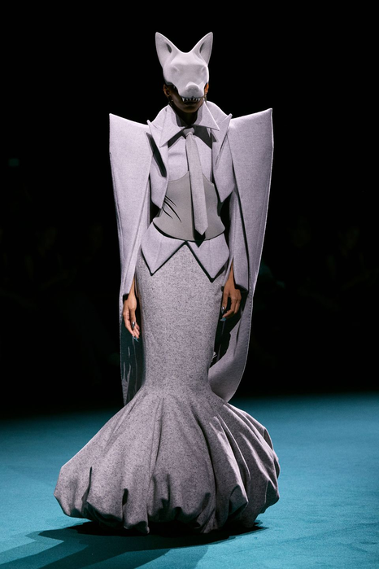
04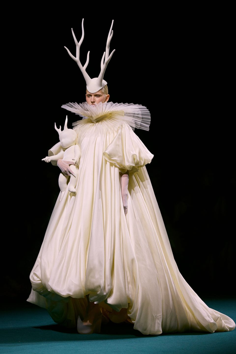
05图片来源：课程 2026–2027 教学资料库｜用途：仅作本周主题转译封面；具体系列信息见各案例页
十六周课程路径女装设计 III · 第06周 · 第1课时｜45分钟
十六周不是孤立主题，而是一条连续的设计证据链
前8周建立方法并完成中期验证；后8周深化春夏与秋冬系列，最终独立完成主题系列与答辩。
01–04判断与定位
05–08提取与验证
09–12季节系列开发
13–16独立项目与考核
已完成本周后续
第1课时｜45分钟
女装设计 III · 第06周
03 学习目标
今天要完成一张可比较的变形·分解板
目标不是“做得更多”，而是让每个结果都能说明改变了什么、保留了什么。
步骤 01
2 条
设限｜不变条件
写出核心元素不可破坏的两条身份条件，作为全部变体的共同边界。
步骤 02
12 个
变形｜方案生成
使用可命名的二维、三维与材料操作，形成十二个可追踪的变体。
步骤 03
逐个记录
比较｜改变与保留
统一尺度并列，给每个方案标注“改变项 / 保留项”，建立判断证据。
步骤 04
3 组
归类｜设计家族
从十二个结果中筛选三组方向，明确每组的共同规则与差异范围。
第1课时节奏衔接与导入5′概念与身份7′案例与方法11′教师演示4′实操14′小结4′
今日完成标准2条不变条件12个变体3个设计家族1张分解板
第1课时｜45分钟
女装设计 III · 第06周
04 概念校正
变形不是“多做几个不一样的”
有控制变量，才知道哪个操作产生了结果。
随机变化
- 同时改比例、材料和位置
- 只追求每张看起来不同
- 无法说明为什么保留
检验：把三张变体并排，你能说出“我这一张改了哪一个”吗？说不出，就是随机。
规则变化
检验：遮住原型只看三个变体——它们看得出是同一条规则生成的吗？
例：同一条“肩部离体”规则，第一轮只改离体距离（三厘米／六厘米／九厘米），第二轮只改固定点（肩线／肩胛／袖窿）。两轮之间绝不同时改，才判断得出是哪一项真正改变了体积。 本周提交至少一组只改一个变量的对照，并写明保留了什么。
第1课时｜45分钟
女装设计 III · 第06周
第05周→本周
今天不从零开始——上周的元素卡，已经写好了今天要锁定的东西
第05周回答“提取什么”；本周回答“如何有规则地改变它，同时不把它改没”。
上周元素卡上的
今天变成
在哪一页用
核心规则（生成规则句）
不变条件 ①：变形中必须保持的关系
身份边界
不变项
不变条件 ②：允许改变的范围之外的东西
身份边界
变量（尺度／位置／数量／材料）
矩阵的 A 触点位置／B 连接方式／C 变化强度
扩量工具
四级分层的“核心”
进入12个变体的那一个元素
二维操作
四级分层的“辅助／语境／禁用”
本周不进入变形，留到第07周产品角色
第07周预告
术语对照（只说一次）第05周的“不变项”＝本周的“不变条件”。本周统一使用“不变条件”；身份边界页里出现的“识别条件”是同一件事。
开场 3 分钟摊开第05周带来的三样：8—10张元素卡、四级分层表、2张核心卡的两条不变项 → 第05周一句话小结写的“第06周我要先改变 ______，同时保持 ______ 不变”，把那两个空抄到今天的第一页 → 今天全程只改变你写下的那一项。
第1课时｜45分钟
女装设计 III · 第06周
05 身份边界
“保留”不是复制：把感觉写成可检验的不变条件
先观察五套造型中反复出现的关系，再把观察改写成能够检查的句子。
YUEQI QI｜Tokyo Fall 2026课堂观察案例｜同一系列 5套
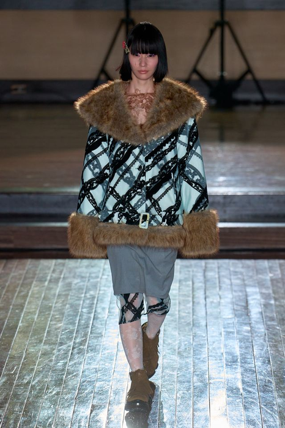
01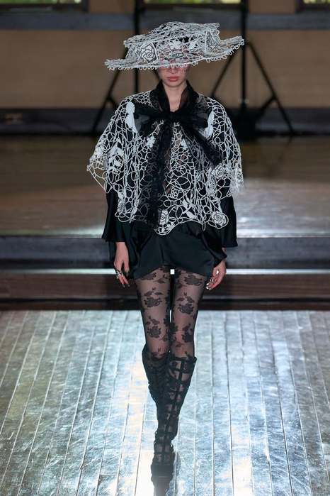
02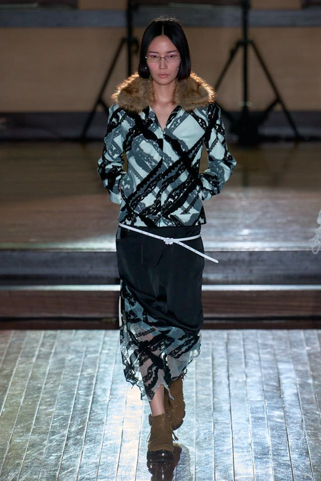
03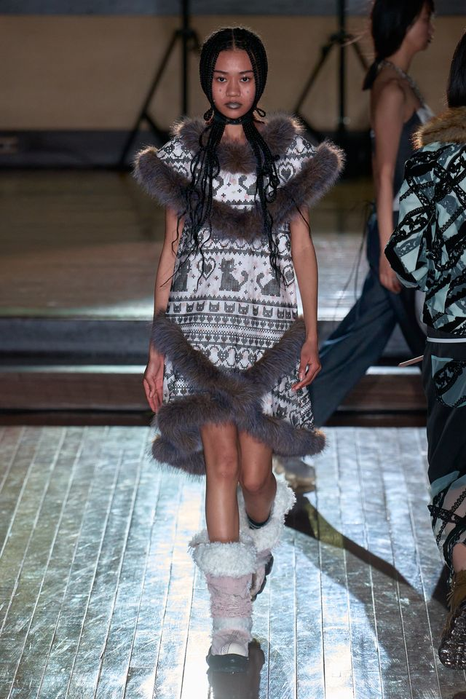
04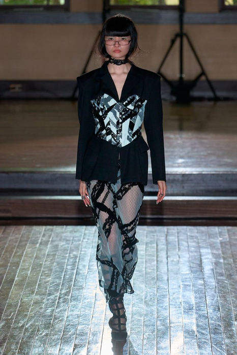
05共同识别 A高对比图形与装饰单元持续跨越衣身多个区域。
共同识别 B外层结构从身体表面向外延伸，形成可见的层次与间距。
允许变化材料、位置、密度、体量与透明度可以改变。
以下为课堂观察分析，不代表设计师官方方法说明。图片来源：Vogue Runway｜Yueqi Qi Tokyo Fall 2026
关系句｜元素如何连接？“图形单元始终跨越肩部与躯干，而不是孤立贴在一个局部。”
方向句｜元素朝哪里发展？“外层结构始终沿身体外侧展开，并形成清晰的外轮廓。”
材料句｜哪些性质必须延续？“材料可由印花变为串珠或毛绒，但必须保持高对比与可识别密度。”
功能句｜如何验证而非想象？“若条件涉及开合、支撑或穿脱，必须用白坯样测试，不能只凭图片判断。”
写法：对象 + 必须维持的关系 / 方向 / 性质 + 可观察范围。先写不变条件，再决定允许改变的变量。
识别条件＝不变条件。本页把“感觉上像同一个系列”改写成可以逐条检查的句子；后面的教师演示、预选与检查表统一称它为“不变条件”。第05周的“不变项”指的也是同一件事。
第1课时｜45分钟
女装设计 III · 第06周
06 AI协同｜受控生成
先有A0人工基准，再让AI扩大可能性
同一轮只改变一个主变量；人物、视角、尺度与核心元素保持一致。
A0 人工基准
固定比较条件
原型、正面视角、A5尺度、材料假设与两条不变条件。
A1 候选生成
只改变一个变量
例如只改变肩部离体距离：4 cm／8 cm／12 cm。
A2 同尺度比较
标记保留与改变
AI输出与手绘变体都放回同一身体模板，不比较画风。
A3 人工决定
保留／修订／淘汰
写明形式收益、结构风险与下一步材料测试。
可用｜扩大候选
AI只协助提出可比较的局部变化。
- 尺度：80%／100%／120%
- 位置：肩／腰／下摆
- 连接：固定／悬挂／穿插
必须记录｜留下证据
没有过程记录，就无法判断人工贡献。
- 工具与完整提示词
- A0图与本轮唯一变量
- 采用、删除与人工修改理由
禁止｜把漂移当设计
以下改变不能作为服装变形证据。
- 人物与姿态改变
- 镜头、背景与光线改变
- 材料和服装结构同时改变
第1课时｜45分钟
女装设计 III · 第06周
07 案例 A
复杂形态仍由重复规则生成
观察单元、方向、密度和身体固定点如何变化。
五个变形样本 · 同一生成逻辑5套并列观察
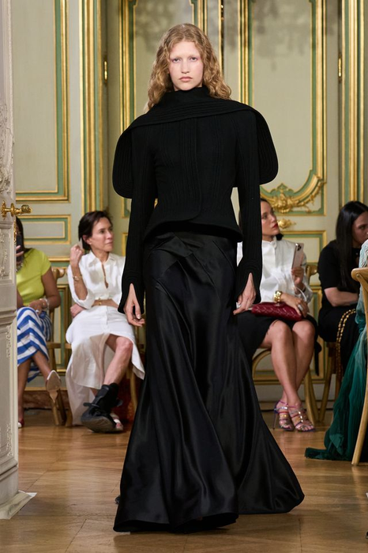
01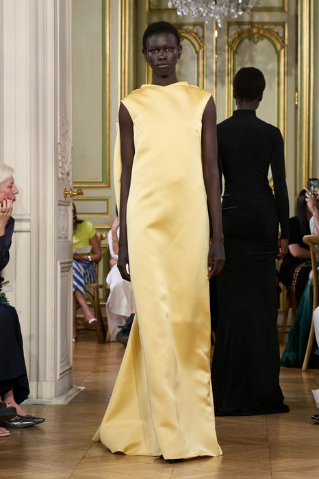
02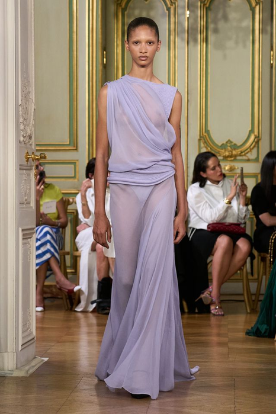
03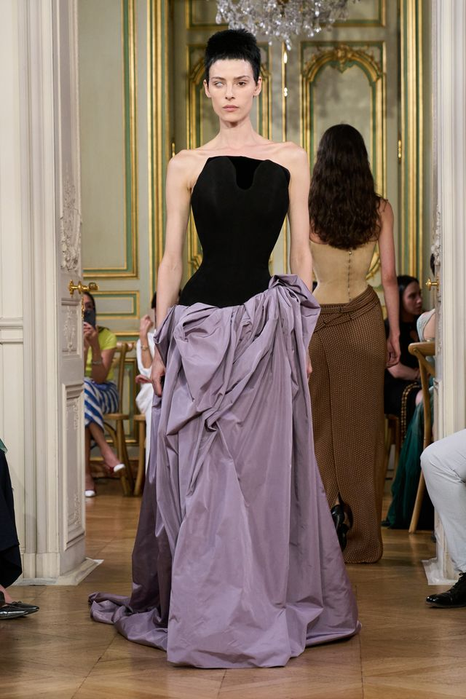
04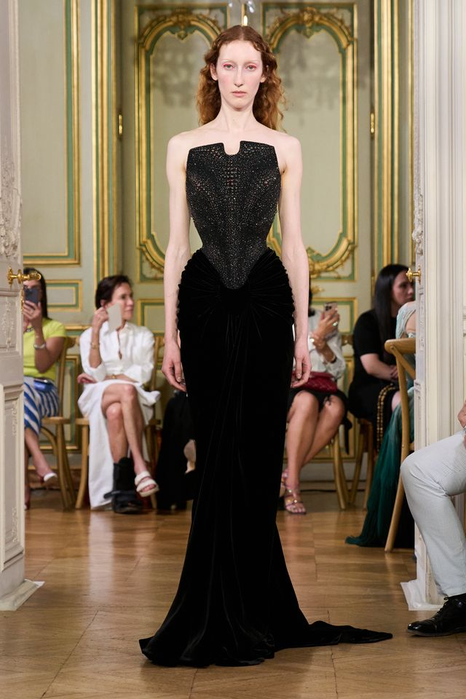
05不要复制最终形态；提取生成规则。
写出每套的单元、操作、固定点和结果。
图片来源：课程 2026–2027 教学资料库｜用途：仅用于“单元·方向·密度·固定点如何变化”的观察；设计师、系列与年份待开课前核实后补注
第1课时｜45分钟
女装设计 III · 第06周
08 高校学生案例
同一概念如何发展为可比较的系列变化？
东华大学《开关》以“成人 / 儿童状态切换”为共同命题，通过可变形女装发展过程方案与系列造型。
 系列并列｜共同语言 + 差异状态
系列并列｜共同语言 + 差异状态 过程证据｜概念、结构与变形方案
过程证据｜概念、结构与变形方案01 先固定身份条件保持“开关”命题、黑粉色关系与可转换结构，使每套仍属于同一系列。
02 再改变可比较变量依次改变比例、开合方式、部件位置与造型状态；避免每套同时更换全部逻辑。
03 最后并列筛选统一视角缩小排列，检查重复是否有节奏、差异是否足以形成3个设计家族。
资料来源：东华大学上海国际时尚创意学院｜2022届服装创意设计毕业作品
第1课时｜45分钟
女装设计 III · 第06周
09 二维操作
二维阶段：用12张缩略草图测试变量
同一人体、同一视角、同一比例；每张只改变一个变量，先比较再精修。
教材学生作业｜同一原型的多方向扩展缩略构想 · 数量优先
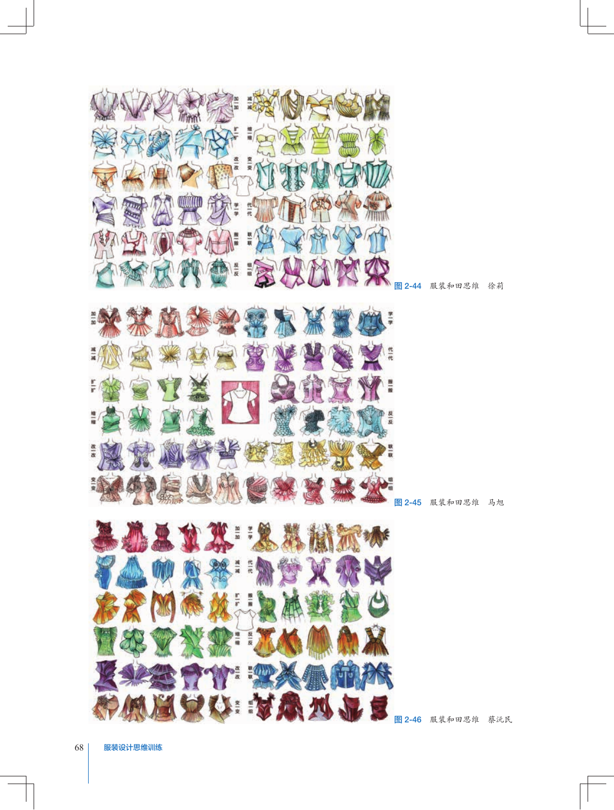
从同一服装原型快速生成大量变化01
复制基础图准备12个相同人体、视角与尺度的简略模板。
02
选择4个动词从补充资料 A1 选择放大、偏移、折叠、组合等4种操作。
03
设置3种强度每个动词分别尝试弱 / 中 / 强，形成12张草图。
04
逐张标注写清“操作 + 参数 + 不变条件”，不要用“更特别”等模糊词。
05
圈选3个方向检查轮廓、结构线、比例与细节，选出真正不同的3个家族。
课堂完成：4个动词 × 3种强度 = 12张草图 ｜ 20分钟 ｜ 圈选3个设计家族
第1课时｜45分钟
女装设计 III · 第06周
10 三维操作
三维阶段：让身体、重力与动作淘汰纸面幻想
从上一页“二维操作”圈选的3个方向出发，用同一比例、同一白坯布快速验证；此时不追求成衣完成度。
01
选择3个纸面方向三个方向必须属于不同家族，不要把相似草图重复做成立体。
02
统一材料与比例使用同克重白坯布与同一人台；先保持比较条件一致。
03
固定 + 释放标出肩、腰、胯等支点，再用剪开、插入或抽褶建立空间。
04
悬挂 + 动作测试退后看正、侧、背面；再测试抬臂、转身、坐姿与步幅。
05
记录并淘汰写清改变项、保留项和失败原因；只保留身体上仍成立的方向。
课堂证据：3个白坯实验 × 正面 / 侧面 / 背面 / 动作 = 12张记录照片淘汰条件：仅正面成立｜重力后坍塌｜动作受阻｜核心身份消失
第1课时｜45分钟
女装设计 III · 第06周
11 课堂转译｜品类混成
把补充资料 A2 的观察改写成自己的品类混成方案
先写结构原理，再画结果；一次只借入一种原理，只重组一个触点。
Sacai Fall 2026｜结构触点判读承接补充资料 A2 · 未重复使用的细节样本
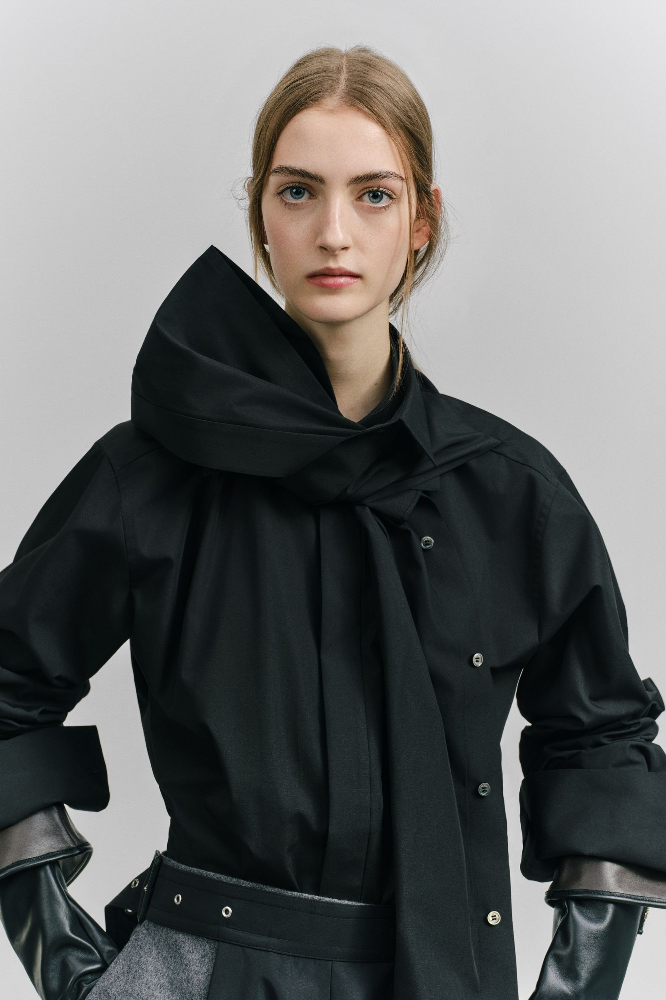
观察重点｜不是“像什么”，而是“哪两种原理在哪里相接”主导品类夹克：维持躯干轮廓与前中开合关系。
借入原理双排扣胸片与围巾式领层，而非复制整套造型。
重组触点领口 + 前中；触点同时承担连接、开合与层次。
验证问题开合后层次、重量、抬臂与穿脱是否仍然成立？
以上为课堂视觉判读，不代表设计师官方逐套说明。图片与系列说明：Vogue Runway｜Sacai 2026秋冬成衣
01
确定主导品类写出负责主要轮廓与身体关系的品类，并标明必须保留的结构原理。
02
借入一种原理从第二品类只借入领、袖、前襟、腰部或口袋中的一种，不搬运完整造型。
03
画3个触点变体只改变连接方式：固定 / 悬挂 / 穿插；身体模板、尺度与核心元素保持一致。
04
选择并说明圈选一个方向，分别写出保留项、改变项、形式收益与下一步验证问题。
学生填写句式我的主导品类是___，保留___；从___借入___；在___位置连接；下一步用___验证。
本页输出：1条品类混成句 + 3个触点缩略图 → 这三个方案就是矩阵的 B1 固定 / B2 悬挂 / B3 穿插；B4 包覆由矩阵另行提供通过标准：两个原理都可读，同时产生新的身体关系；平面图与连接小样留到后续验证。
第1课时｜45分钟
女装设计 III · 第06周
12 扩量工具｜从触点到12个变体
锁定“课堂转译”页的主导品类与核心元素，只改变结构触点
重复同一基础图12次；每一格只改变一项，不能把两格组合后才算一个方案。
本轮保持不变
核心元素沿用“课堂转译”页写出的不变条件。
主导品类主要轮廓与身体关系不变。
人体模板视角、姿态与尺度完全一致。
材料假设先用同一克重与支撑条件比较。
A组4张 + B组4张 + C组4张 = 12张同尺度变体 → 进入“1课时实操”的20分钟后续产品开发备用变量：肩型 / 领型 / 开合 / 腰部 / 长度 / 袖型（第07周用于产品角色深化）。
第1课时｜45分钟
女装设计 III · 第06周
13 1课时实操
20分钟：按“扩量工具”页的矩阵完成12个二维变体
统一使用A5大小、同一身体模板与同一材料假设；每张只改变一个编号变量。
05分钟
A组｜4个触点位置肩部 / 前中 / 腰部 / 下摆
05分钟
B组｜4个连接方式固定 / 悬挂 / 穿插 / 包覆
05分钟
C组｜4个变化强度轻度 / 中度 / 强度 / 边界测试
05分钟
统一编号并圈选标注A1—C4；圈选3个不同方向
输出：12张同尺度变体＋每张操作编号＋3个候选方向；没有编号的方案不进入下一步。
第1课时｜45分钟
女装设计 III · 第06周
14 教师演示｜受控比较
基准型 → V1 → V2 → V3：同一变量如何产生清楚差异
示例只改变“肩部离体距离”；其余条件全部锁定。
基准型
4 cm 基线
肩峰固定；结构向外释放，抬臂不受阻。
- 不变：固定点／材料／视角
- 记录：正、侧、抬臂三张
- 判定：身份清楚，张力偏弱
决定：作为比较基准保留
V1
8 cm 轻度
轮廓变清楚，身体与结构仍保持接近。
- 收益：肩线辨识度提高
- 风险：后肩略有塌陷
- 证据：侧面空间更稳定
决定：保留，进入材料测试
V2
12 cm 中度
离体关系成为主视觉，抬臂开始牵动后侧。
- 收益：高端造型感增强
- 风险：动作量下降
- 证据：后侧需要第二支点
决定：修订支撑后再测
V3
18 cm 边界
轮廓强烈，但核心元素被体积覆盖。
- 收益：视觉冲击最大
- 风险：失去身份与可穿性
- 证据：转身时结构变形
决定：淘汰；回到12 cm
教师追问：哪里没变？只改了什么？收益与风险是什么？下一步决定是什么？
第2课时｜45分钟
女装设计 III · 第06周
第2课时｜45分钟
从变体数量进入设计家族
验证与诊断11′ → 预选3′ → 实操20′ → 讲评8′ → 预告与收尾3′
第2课时｜45分钟
女装设计 III · 第06周
16 D区验证①｜身体边界
身体边界测试：形态成立，不等于穿着成立
用同一系列五套极端体积案例，记录体积位置、离体距离、支撑方式与动作冲突。
Comme des Garçons｜1997 春夏Body Meets Dress—Dress Meets Body
同一系列 5套｜点击放大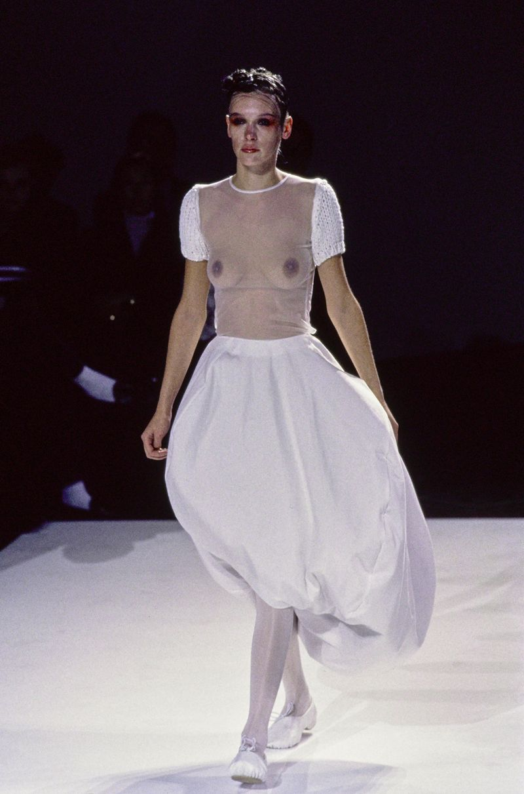
01｜定位体积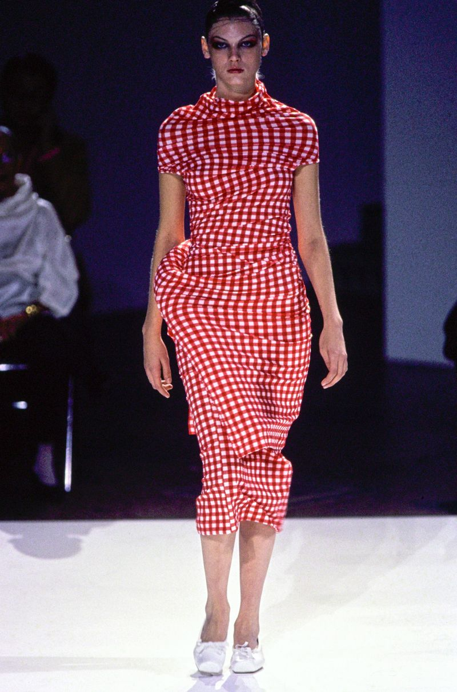
02｜比较距离 03｜判断支撑
03｜判断支撑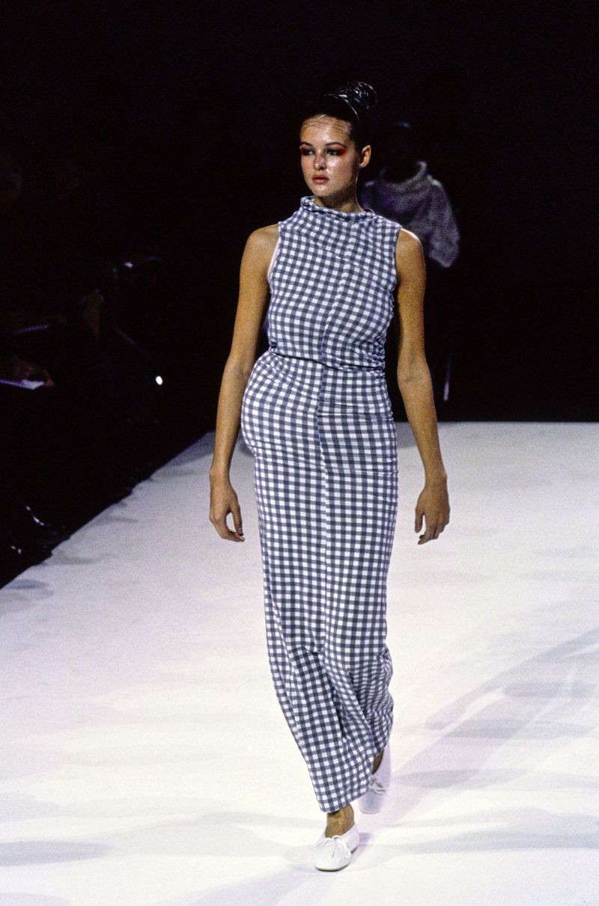
04｜预测冲突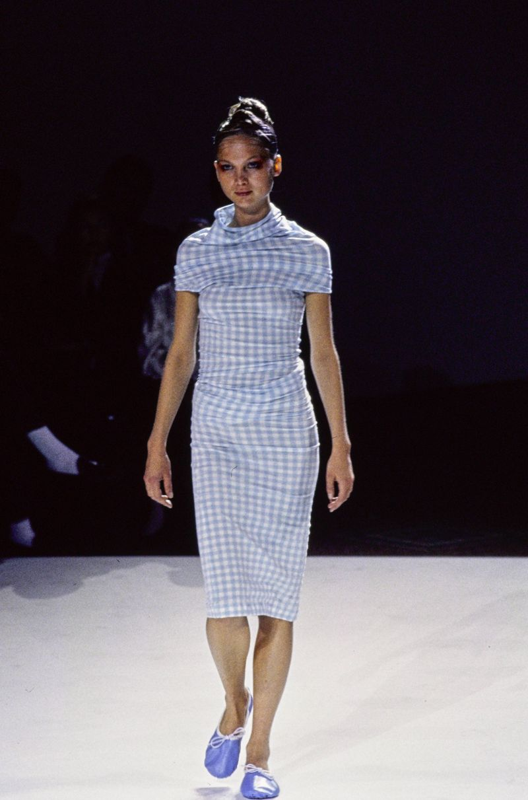
05｜形成判定为什么适合做边界测试？羽绒填充与弹性尼龙把衣服的体积推进到身体之外，使“服装 / 身体”的边界在静止与动作中都变得可观察。
系列与图像：Vogue Runway｜Comme des Garçons Spring 1997；方法依据：The Met｜Object / Subject
D区每套必须留下1条判定记录以下为课堂观察框架，不是品牌官方逐套说明。
01 体积位置肩 / 胸 / 腰 / 胯 / 背：体积从身体哪个部位生成？
02 身体距离贴体 / 顺体 / 离体：衣服与身体保持什么距离？
03 支撑方式身体、材料弹性、填充物或内部结构，谁在维持形态？
04 动作冲突抬臂 / 转身 / 坐下 / 行走时，哪里牵扯、碰撞或坍塌？
学生填写句式该体积位于___，依靠___支撑；在___动作中发生___。
最终判定保留｜证据充分修订｜改变位置 / 尺度 / 支撑淘汰｜动作或身份失效
补充查看：完整3×3关系坐标见补充资料 A4；课堂继续进入材料选择。
第2课时｜45分钟
女装设计 III · 第06周
17 D区验证②｜材料选择
同一造型换一种面料，身体上的结果会怎样改变？
先确定“身体距离 + 支撑方式”；本页只判断哪一种材料能把这段关系保留下来。
比较时固定同一结构同一尺寸同一固定点只更换：材料
01挺括材料
撑起
材料反应抗弯较强，边缘不易倒下
↓
身体结果体积与身体保持距离
判断边缘是否站住？离体距离是否坍塌？适合关系离体 + 结构
02垂坠材料
垂下
材料反应柔软并顺着重量向下移动
↓
身体结果形成连续曲线与动作回摆
判断褶谷是否自然？关键位置是否被向下拉走？适合关系顺体 + 重力
03弹性材料
贴合
材料反应随身体伸展，并在释放后回复
↓
身体结果贴合身体并形成可控张力
判断拉伸后是否回复？接缝与开口是否过度牵拉？适合关系贴体 + 张力
补充条件厚度决定体积与触点负担；透明度只改变内外层次与身体可见度。
选择顺序先写需要的材料行为，再寻找面料；不要从“喜欢这块布”倒推设计。
课堂快速测试｜10分钟1个设计家族 × 2种材料
判定句材料A使 ______ 得到保持；材料B使 ______ 消失，因此选择 ______。
下一页：把选中的材料放入动作中，检查折叠、回摆与结构稳定性。
第2课时｜45分钟
女装设计 III · 第06周
18 成功案例｜材料协同
Issey Miyake 2026秋冬：硬质曲面如何控制柔软织物
上一页选择了材料行为；本页观察同一系列如何保持“硬质支撑 × 柔软释放”，只改变固定位置、释放方向与体量。
系列不变条件硬质曲面 × 柔软织物系列可变条件固定位置 / 释放方向 / 体量大小
同一系列五套对照课堂反向观察｜不代表品牌官方版型分析
 01 胸前定位侧向垂布 · 向下释放
01 胸前定位侧向垂布 · 向下释放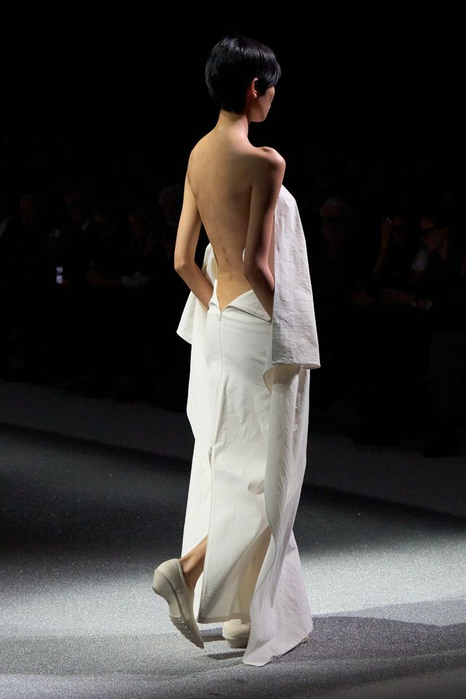
02 背部定位后向展开 · 身体留距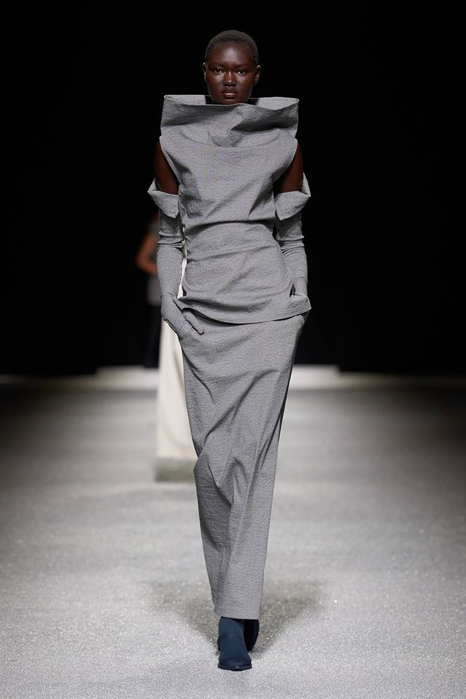
03 肩胸围合垂直堆叠 · 局部顺体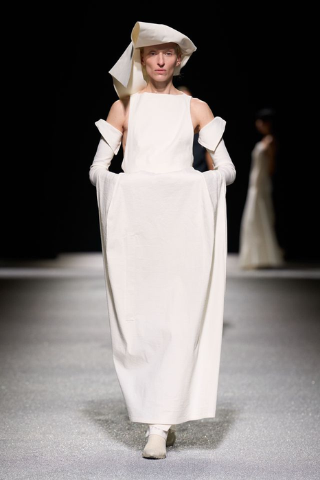
04 头肩折面前身悬挂 · 重力下落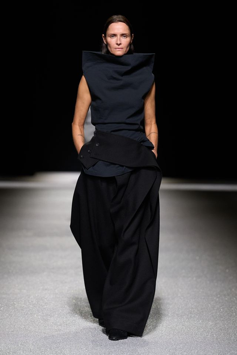
05 上身围合腰部释放 · 软硬转换与补充资料 A4 连接｜身体关系离体结构负责定位，顺体或悬挂部分保留动作余量。
与上一页连接｜材料行为挺括材料“撑起”边界；柔软材料“垂下”并形成回摆可能。
证据边界｜不要过度解读静态图可判断软硬对照、固定位置与释放方向；真实回摆和稳定性仍需视频或样衣测试。
学生判读任选一套，用“身体距离 + 支撑方式 + 材料行为”写成一句话，再只改变一个变量生成下一套。
第2课时｜45分钟
女装设计 III · 第06周
19 看错｜失败诊断
“做得不一样”不等于受控变形
沿着 基准型 → 错误 → 修复 横向阅读，先看变化在哪里失控，再决定最小修复动作。
01｜变量失控一次改了太多比例、位置、材料同时变化判断：能否说出唯一变量？
基准型固定位置与比例基准
→错误三个以上变量一起改变
→最小修复每轮只保留一个变量
02｜AI 条件漂移差异来自画面人物、姿态、镜头与材料改变判断：遮住人物后，规则仍可读吗？
基准型同人物、同姿态、同视角
→错误差异来自画风与摄影
→最小修复锁定人物与尺度，只改服装
03｜只有表面替换结构没有发展颜色不同，但身体关系不变判断：距离或支撑真的改变了吗？
基准型身体关系与结构边界
→错误只换颜色、纹样或装饰
→最小修复加入一个可测的结构变量
比较的目的不是排名，而是说明“什么条件产生了什么设计结果”。
第2课时｜45分钟
女装设计 III · 第06周
20 选6｜立体测试预选
从12个二维变体中预选6个立体测试对象
现在只决定“谁值得进入身体测试”；三大家族要等材料、动作与结构证据完成后再确定。
01身份保留变形后仍能指出核心元素与两条不变条件。
02变量覆盖六个对象分别代表位置、比例、方向、数量或尺度差异。
03测试价值二维图无法确认材料、动作或支撑，值得进入身体验证。
本页输出｜6个测试对象每个对象写：基准型编号 + 唯一变量 + 为什么必须做成立体。
第2课时｜45分钟
女装设计 III · 第06周
21 做3｜课堂实操
20分钟，只完成最有判断价值的3个立体测试
课堂完成三件并做出决定；其余三件课后沿用同一记录方式补足。
STUDIO TEST20:003个优先立体测试每件只改变一个参数
每一步都留下可比较证据
03′锁定测试选3个对象，写清基准型、唯一变量与预期身体关系。
产物｜3张测试卡 09′快速立体用纸或坯布制作三个同尺度模型，每件只改变一个参数。
产物｜3个同尺度样体 05′材料与动作最佳方案做材料 A/B 比较，并拍正面、侧面与一个动作。
产物｜A/B 对照 + 3视图 03′记录决定填写结果与决定，标记保留、修订或淘汰。
产物｜3条人工决定 课堂输出3个立体测试 + 1组材料A/B比较 + 9张基础记录照片 + 3条决定。
课后补足完成另外3个立体测试，使第07周带来的总数达到6个。
第2课时｜45分钟
女装设计 III · 第06周
22 说证据｜同伴讲评
不要说“我喜欢”，要指出哪一条证据支持决定
2人一组，共8分钟。说明者先陈述，提问者必须指向板上证据，再共同决定家族。
说明者｜2分钟“我的变化依据是……”指出核心元素、唯一变量，以及变化后仍保留的身份。
提问者｜2分钟“证据具体在哪里？”要求对方指向来源图、参数编号、身体照片或材料对照。
01身份来源图 + 不变条件
→02变量操作编号 + 参数档位
→03身体正面 / 侧面 / 动作
→04决定共同规则 + 唯一差异
A共同规则：______位置 / 尺度 / 方向
B共同规则：______位置 / 尺度 / 方向
C共同规则：______位置 / 尺度 / 方向
讲评结果：保留1个、修订1个、淘汰1个，并为三大家族写暂定规则。
第2课时｜45分钟
女装设计 III · 第06周
24 编5｜第07周预告
五套不是五个孤立造型，而是一条可读的系列节奏
先确定主家族，再让另外两个家族承担过渡与强调；身体关系、材料行为和主题语境必须连续。
编辑原则：同一核心规则在五个角色中产生强弱变化，而不是每套重新开始。
01核心造型建立系列规则与身体关系。
规则强度｜100% 02过渡造型降低一个变量，连接前后。
关键变量｜70% 03轻量造型回应春夏温度、动作和重量。
材料重量｜下降 04强调造型放大关键变量，形成视觉高点。
关键变量｜上升 05完整造型整合结构、材料与细节证据。
全部证据｜整合 分解板 A—E来源 / 操作 / 对照 / 验证 / 选择
6个立体测试课堂3个 + 课后补足3个
3个家族每组至少2个有效变体
春夏限制场景、温度、材料重量与动作
第2课时｜45分钟
女装设计 III · 第06周
25 写一句｜一句话小结
一句话小结：变化必须留下规则
用一条完整句子连接核心元素、操作、家族与下周的系列角色。
下课前完成并朗读“我的核心元素在变形中必须保留 ______；最有效的操作是 ______，它形成了 ______ 家族，并将在春夏系列中承担 ______ 角色。”
第06周成果检查
下课前提交：1张分解板照片 + 1条判定句。第07周带齐6个立体测试。
课后查阅｜教学补充
女装设计 III · 第06周
补充资料 A1｜八个操作动词
八个操作动词：一次只改变一个变量
先把操作说清楚，再进入二维、三维与材料实验；每次变化都必须回答一个判断问题。
01
放大 / 缩小
尺度 · 视觉重心
哪一处成为新的视觉中心？
02
重复 / 阵列
数量 · 密度 · 节奏
重复形成了秩序，还是只在堆积？
03
旋转 / 镜像
方向 · 对称关系
方向改变后，身体关系是否更新？
04
偏移 / 错位
位置 · 连接 · 开口
错位是否产生了结构张力？
05
拉伸 / 压缩
比例 · 身体距离
比例变化是否重写身体周围的空间？
06
切开 / 插入
边界 · 内部空间
插入部分是否建立了新的层次？
07
折叠 / 翻转
内外 · 边缘 · 体积
平面操作能否转化为立体结构？
08
组合 / 分离
层级 · 模块关系
重组后是否仍保留核心身份？
课后查阅｜教学补充
女装设计 III · 第06周
补充资料 A2｜结构级重组
通过三维验证后，把局部变形推进到结构级重组
这不是更换主题，而是把“三维操作”页保留下来的方向放入两种服装品类的结构中，继续测试新的触点。
Sacai Fall 2026 RTW｜同一系列的五种混成结构课堂视觉判读 · 图片可点击放大
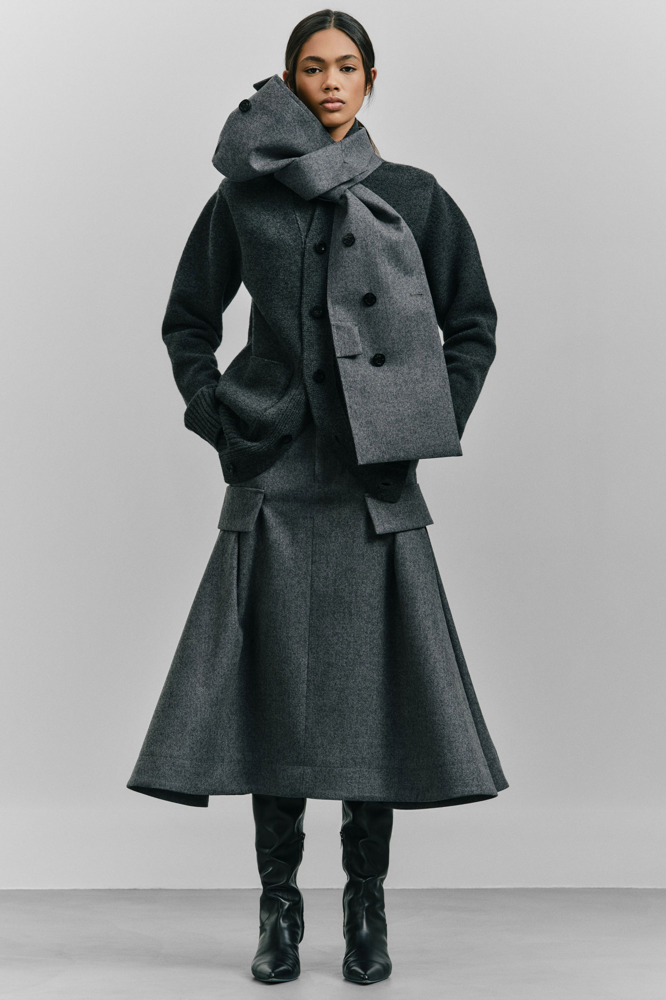
西装 × 半裙比例腰部收束触点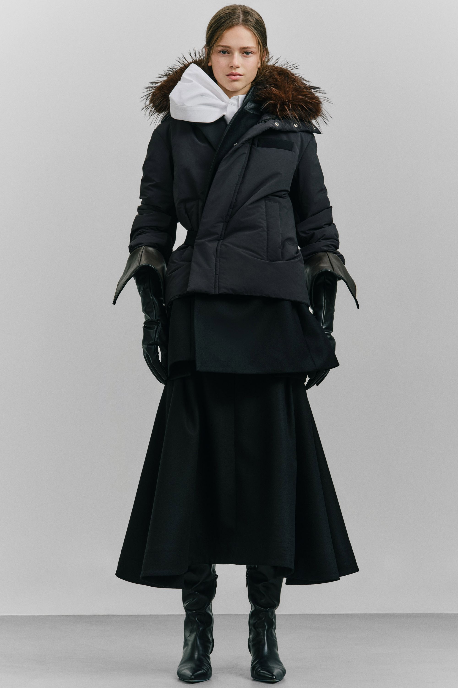
夹克 × 双层前襟胸前叠合触点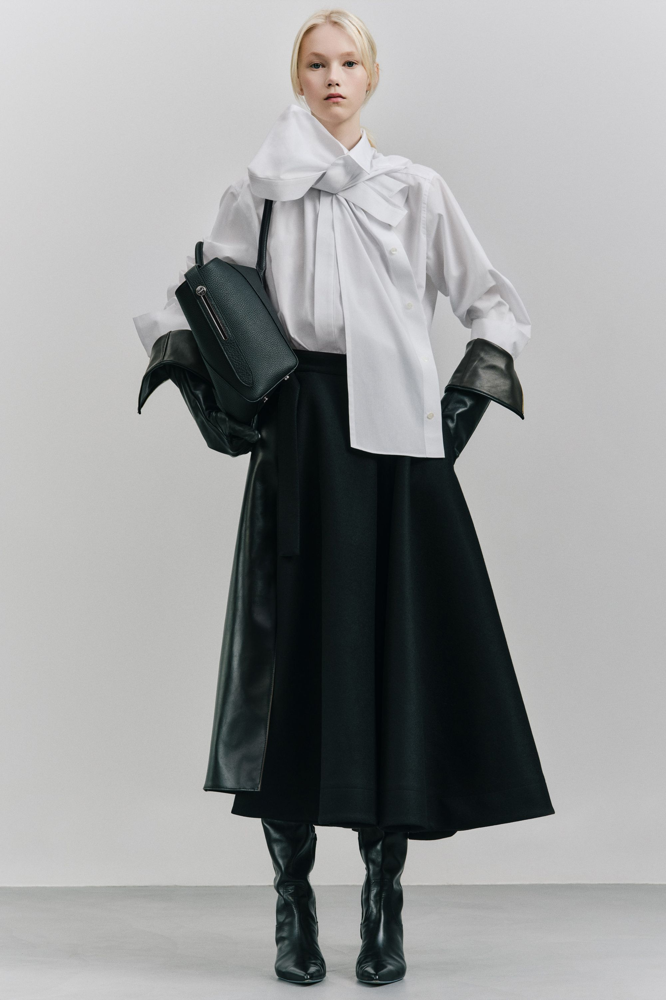
衬衫 × 外套袖袖窿连接触点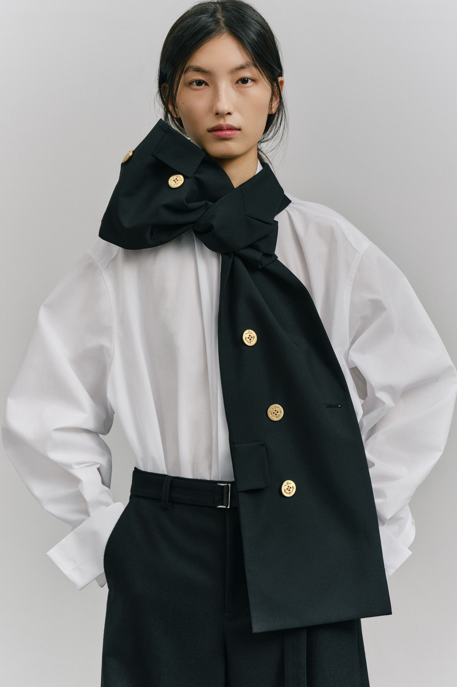
衬衫 × 西装胸片前中开合触点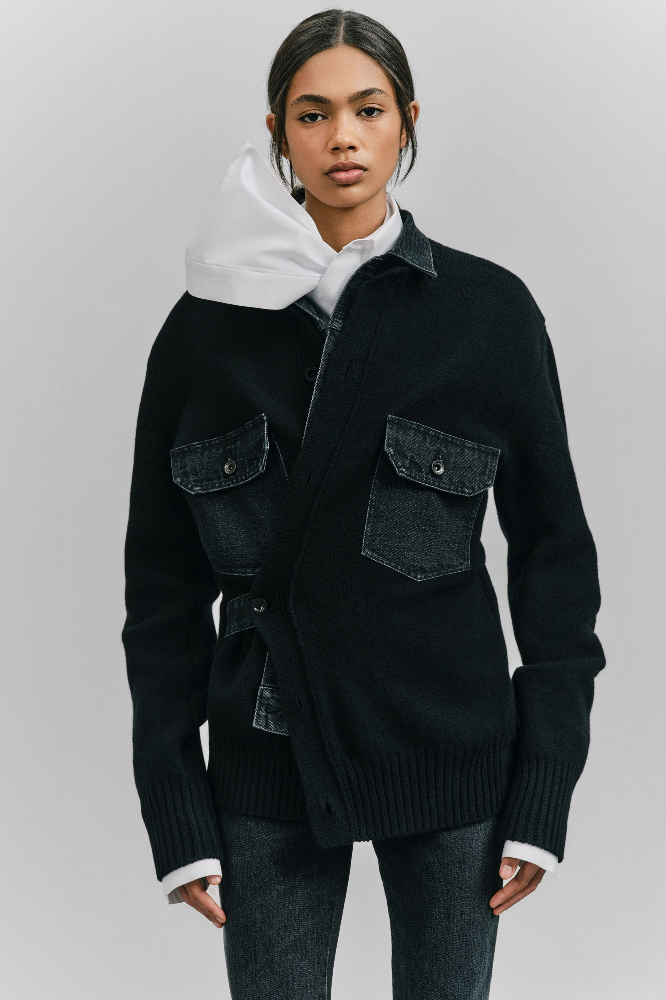
工装夹克 × 衬衫领层领口层级触点主导品类先判断哪一种品类承担主要身体关系。
借入结构只指出被借入的领、袖、前襟或腰部原理。
重组触点检查两种原理在哪里连接、开合与承重。
以下标签为课堂视觉判读，不代表设计师官方逐套说明。图片与系列说明：Vogue Runway｜Sacai 2026秋冬成衣
11
承接三维验证结果只使用“三维操作”页中身体、重力与动作测试后仍成立的方向。
01
选择主导品类明确连衣裙、夹克、衬衫等哪一种负责主要轮廓与穿着关系。
02
借入一种结构原理从第二品类只借入领、袖、前襟、腰部或口袋中的一种原理。
03
只重组一个触点用平面图与连接小样验证开合、承重、动作和穿脱，不比较拼贴数量。
13
进入品类混成练习下一页把主导原理、辅助原理、重组触点和验证证据写成方案。
连续性原则：核心元素与不变条件保持不变；这里只把变化从“局部形态”推进到“结构层级”。
课后查阅｜教学补充
女装设计 III · 第06周
补充资料 A3｜分解板编辑
把“1课时实操”的12个变体与“教师演示”的判断记录，编辑成一张可复核的分解板
不是按时间堆积过程，而是按“来源 → 操作 → 对照 → 验证 → 选择”组织证据。
A3横版分解板｜建议版面比例统一网格 · 同尺度对照 · 结论必须有证据
A 来源｜15%身份边界
核心元素图 / 原型
01必须保留的关系或方向
02允许改变的范围与条件
B 操作｜15%A1—C4
A1A2A3A4B1B2B3B4C1C2C3C4
每个编号写清：改变项 / 保留项 / 操作动词。
C 对照｜35%12个同尺度变体
A1位置变体
A2位置变体
A3位置变体
A4位置变体
B1连接变体
B2连接变体
B3连接变体
B4连接变体
C1强度变体
C2强度变体
C3强度变体
C4边界测试
D 验证｜20%成功 + 失败
3D·正面轮廓与支点
3D·侧面离体距离
动作·抬臂活动与牵扯
材料·挺括支撑结果
材料·垂坠重量方向
失败证据坍塌或失去身份
E 选择｜15%3个家族
F1家族规则句 + 代表方案
F2家族规则句 + 代表方案
F3家族规则句 + 代表方案
12个同尺度变体
6项验证证据
3个设计家族
3条淘汰理由
A核心元素与两条身份条件是否可见？
B每个编号能否说明只改变了什么？
C12个方案是否能在同尺度下比较？
D结论是否有身体、材料或动作证据？
E为什么形成三个家族，为什么淘汰？
判定原则：任何“保留 / 修订 / 淘汰”结论，都必须能在板上找到对应的对照证据。
接下来：第16—18页与补充资料 A4 提供D区“身体、材料与动作验证”的观察方法；只借用判断方法，不复制品牌造型。
课后查阅｜教学补充
女装设计 III · 第06周
补充资料 A4｜身体距离与支撑
先判断身体距离，再判断形态如何被支撑
同一变体用两个维度定位；“悬垂”属于形态生成方式，不与贴体、顺体、离体并列。
横轴｜身体距离服装与身体之间保持多大空间？
纵轴形态支撑
贴体持续接触身体
顺体保留动作余量
离体形成可测空间
张力拉伸 / 收束 / 牵引
弹性包覆材料张力沿身体曲面连续分布。检查：压迫与回弹
局部收束局部张力控制宽松量与方向。检查：牵扯与恢复
拉索撑开张力在固定点之间建立离体空间。检查：固定点稳定
结构衬垫 / 骨架 / 固定点
贴身定型内部结构贴近身体并控制轮廓。检查：贴合与穿脱
软性支撑局部结构维持轮廓，同时允许动作。检查：弯折与复位
骨架架空内部支撑使服装稳定离开身体。检查：承重与碰撞
重力重量 / 悬挂 / 垂坠
重量贴落材料重量使表面沿身体向下贴合。检查：局部堆积
垂坠流动重力形成方向，并随动作持续变化。检查：步幅与回摆
悬挂体积材料从支点下落，同时保持离体体量。检查：支点与坍塌
如何使用这张坐标？本页为课程分析工具，不是固定风格分类。
01 先读横轴根据“D区验证①｜身体边界”页的“身体距离”记录，判断贴体、顺体或离体。
02 再读纵轴根据“支撑方式”证据，判断主要依靠张力、结构还是重力。
03 最后比较同一格内寻找连续性，不同格之间寻找真正有意义的差异。
家族规则公式身体距离 + 支撑方式 + 关键位置
F1离体 + 结构 + 肩部
肩部架空家族
F2顺体 + 重力 + 侧缝
侧向悬垂家族
本页输出把12个变体放入坐标 → 选择差异最清楚的3个家族 → 每个家族写1条规则句。
配合“D区验证②｜材料选择”页：同一坐标位置会因材料的挺括、垂坠、弹性与透明度产生不同强度。
课后查阅｜教学补充
女装设计 III · 第06周
补充资料 A5｜实验审计记录
测试之前先建立实验审计记录
AI输出、手绘与立体结果必须在同一尺度下比较；失败方案也要留下，因为它解释了边界。
01基准型｜基线核心元素与不变条件
02变量｜本轮唯一改变的参数
03结果｜可见收益、风险与身体反应
04决定｜保留、修订或淘汰
基准型｜证据肩峰是固定点；正面、侧面与抬臂照片齐全。
不变：固定点 + 轻质半透明材料。
变量｜记录离体距离：4 cm → 12 cm。
其他条件不变；操作编号 S-03。
结果｜判断收益：轮廓辨识度提高。
风险：抬臂时后侧塌陷，重量向后偏移。
决定｜下一步修订：增加后侧第二支点。
复测：8 cm与12 cm，进入离体家族候选。
学生记录句｜每个测试都要写
基准型我保持 ______ 与 ______ 不变。
变量本轮只把 ______ 从 ______ 改为 ______。
结果它使 ______ 更清楚，但造成 ______ 风险。
决定因此我选择 保留 / 修订 / 淘汰。
最低证据：正面 + 侧面 + 动作照片，同一背景、同一尺度、同一固定点。
课后查阅｜教学补充
女装设计 III · 第06周
补充资料 A6｜第06周检查表
第06周检查：证据达到什么程度？
本周评价设计过程是否可验证，不以最终效果“漂亮”作为唯一标准。
统一尺度｜每项0—2分0 未见证据 / 1 有记录但不能比较 / 2 证据完整且可复查
01过程12个二维变体有编号，并记录操作动词和参数。
2分证据：基准型与12个变体可一一对应。 02控制每轮只改变一个变量，其余条件被明确锁定。
2分证据：能说出每个测试的唯一变量。 03验证有正面、侧面、动作照片以及重点方案的材料A/B比较。
2分证据：身体与材料结论能被照片复查。 04编辑暂定三大家族各有共同规则和内部差异。
2分证据：每个家族至少有2个有效变体。 通过建议：总分达到6分，且“控制”和“验证”不得为0分。本页为形成性检查，不替代课程总评。
课后查阅｜教学补充
女装设计 III · 第06周
23 期末评价连接
本周成果将进入同一套六项终期评价
平时训练不是零散作业，而是期末系列的证据积累；本页依据《25级〈女装设计〉考核大纲》期末实践考试评分标准（满分100分）。
10分
时代性与创意
主题回应当下，并形成自己的问题与立场。
10分
趋势性与元素
提炼的设计元素与当季趋势、审美和来源一致。
20分
当代女性适配
款式回应身体、动作、场景与真实穿着需求。
20分
整体造型美感
比例、色彩、材料与细节共同形成完整造型。
20分
市场与定位
顾客、价格、品类和使用情境边界清楚。
20分
统一与丰富
风格统一，同时具有角色、搭配与造型变化。